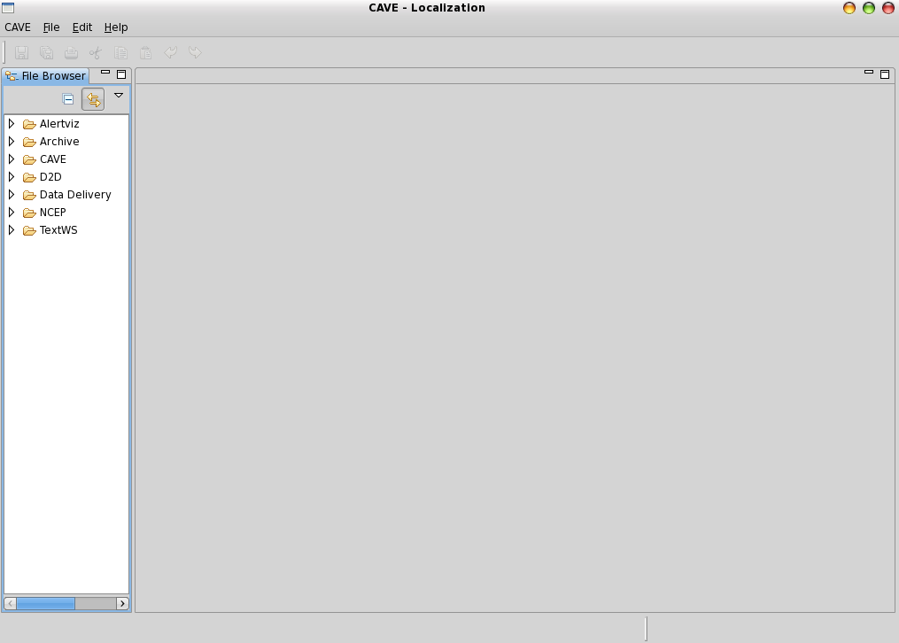
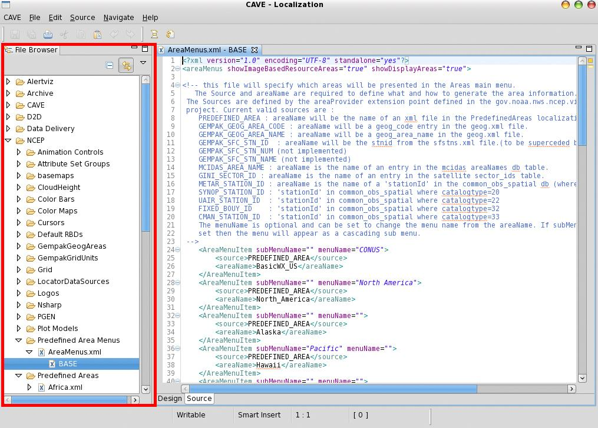
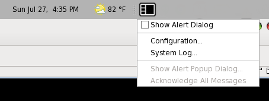
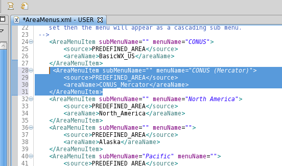
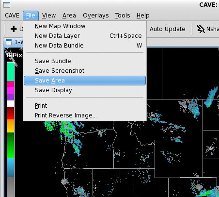
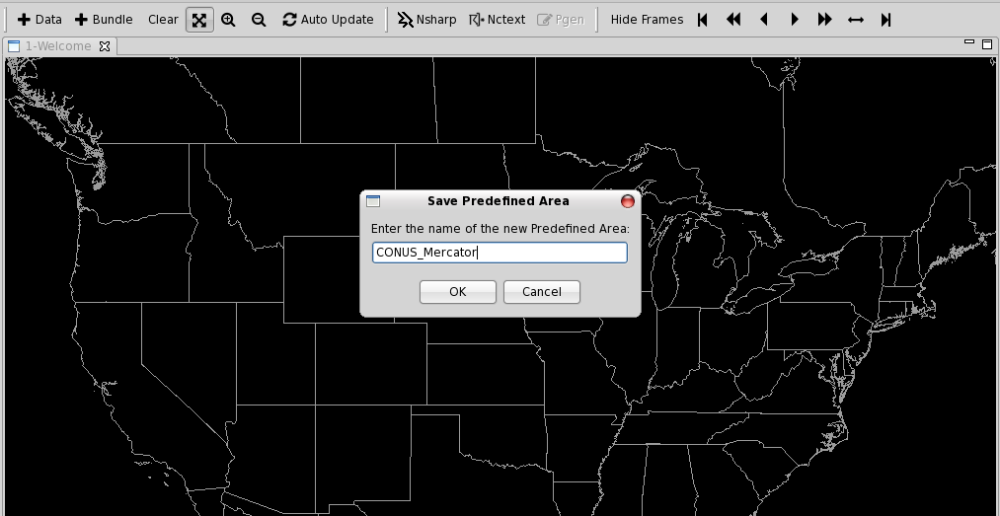

CAVE User Guide : Localization Perspective
The localization perspective was developed to provide a user with an easy way to perform configuration of CAVE. It is launched from the perspective button in the main CAVE display. Making changes in localization is really an act of overriding files which exist at a lower level (BASE being the lowest).

Once opened, the perspective allows the user to configure SITE and USER-level configuration files which are used to localize or customize the CAVE experience. Most of the site data configuration files that control the baseline localization are not accessible through this interface. Examples of things that can be accessed through the perspective include (this list is not all-inclusive):
-
NCP Predefined Areas, Color Maps and Style Rules
-
D2D Volume Browser Controls
-
D2D Bundles - Scales (WFO, State(s), etc.)
-
CAVE Map Overlays, Color Maps and Style Rules
-
AvnFPS Configuration
-
GFE Tools and Utilities
-
Hydro Apps_defaults
-
WarnGen Velocity Templates and Configuration Files
The left panel contains a directory heirarchy of CAVE files for D2D, GFE, and NCP, which can be copied and edited as user localization files.

There may be several versions of each file including BASE, CONFIGURED (GFE only), SITE, WORKSTATION, and USER. Each file version is listed separately under the actual file name.
The File Editor view opens the selected configuration file in an appropriate editor. For example, a Python file is opened in a Python editor, and an XML file is opened in an XML editor.
Customize CAVE Menus
Navigate to CAVE > Menus and select a submenu (e.g. satellite). This directory lists all of the menu file contributions made by this data plugin. Most data menu directories will have an index.xml file from which you can investigate the menu structure and made needed changes.
Selecting a file such as index.xml will show a sub-menu with a default localization level (typically BASE or CONFIGURED). Double-click this tab to open in the file editor (you may need to click Source at the bottom of the view to see the raw XML). Right-click this tab and select Copy To > User (awips) and you will see the file localization versions update with the new copy. Select this file to edit, and override, the existing version.
Add a new Predefined Area to NCP
In the Localization Perspective, navigate to ‘NCEP - Predefined Area Menus’, double-click ‘AreaMenus.xml’, and then right-click ‘BASE’ and select ‘Copy To - User’. You can also copy to Desk or Workstation localization.

You will see a new ‘USER (username)’ or ‘WORKSTATION (name)’ **entry for the file **AreaMenus.xml.
Double-click the new file and copy or create a new AreaMenuItem entry, such as a new CONUS Mercator projection called CONUS_Mercator:
<AreaMenuItem subMenuName="" menuName="CONUS (Mercator)">
<source>PREDEFINED_AREA</source>
<areaName>CONUS_Mercator</areaName>
</AreaMenuItem>

Now you can either copy and post an existing xml area file, or simple create one in the NCP. Switch back to the NCP, and select ‘Area - World’ to load a known Mercator projection. Zoom in to the continental United States and then from the menu bar select ‘File - Save Area’ and name it CONUS_Mercator so it matches the name string given in the above AreaMenuItem.


You can switch back to the Localization Perspective to confirm that the file was saved. It will be viewable under NCEP - Predefined Areas and, in this example, be called CONUS_Mercator.xml.

CAVE needs to be restarted in order for the new menu item to show up under the NCP Area menu.

Switch to the new Area to confirm.

On your workstation you can find the new USER localization files in ~/caveData
awips@edex:~/caveData> find ./ -name CONUS_Mercator.xml
./etc/user/mjames/ncep/PredefinedAreas/CONUS_Mercator.xml
./.localization/NCEP/Predefined Areas/CONUS_Mercator.xml